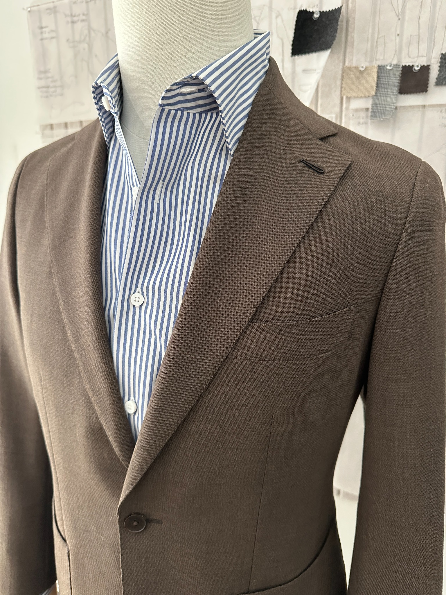
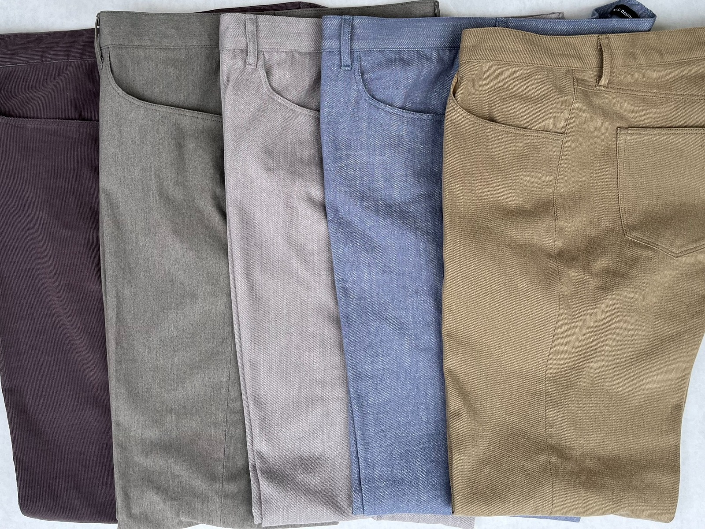
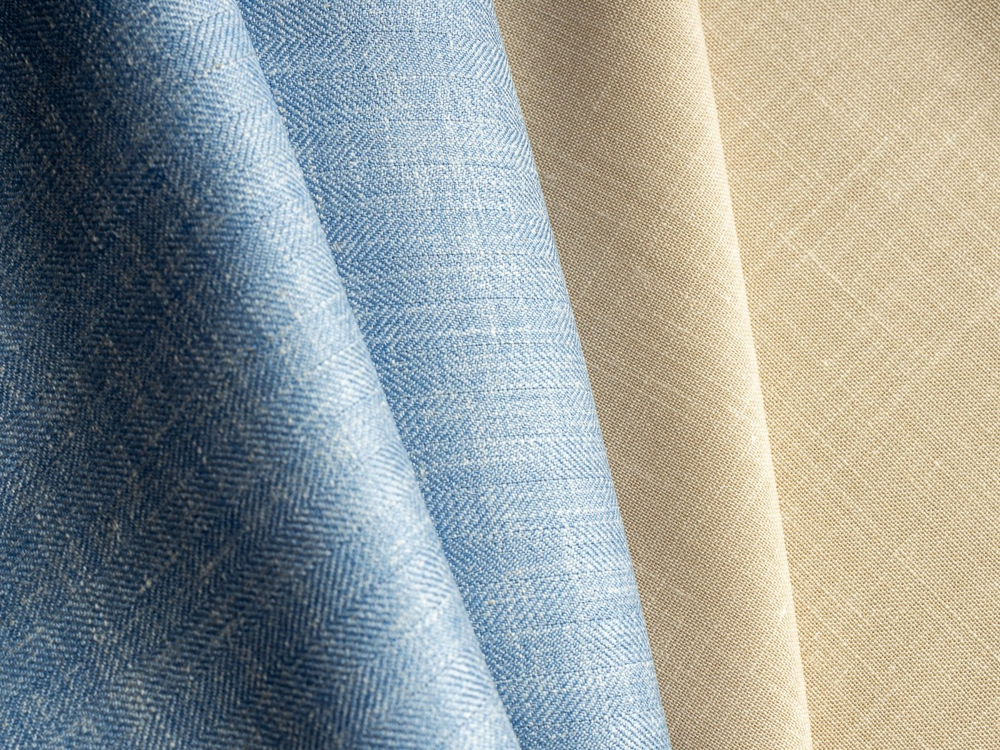
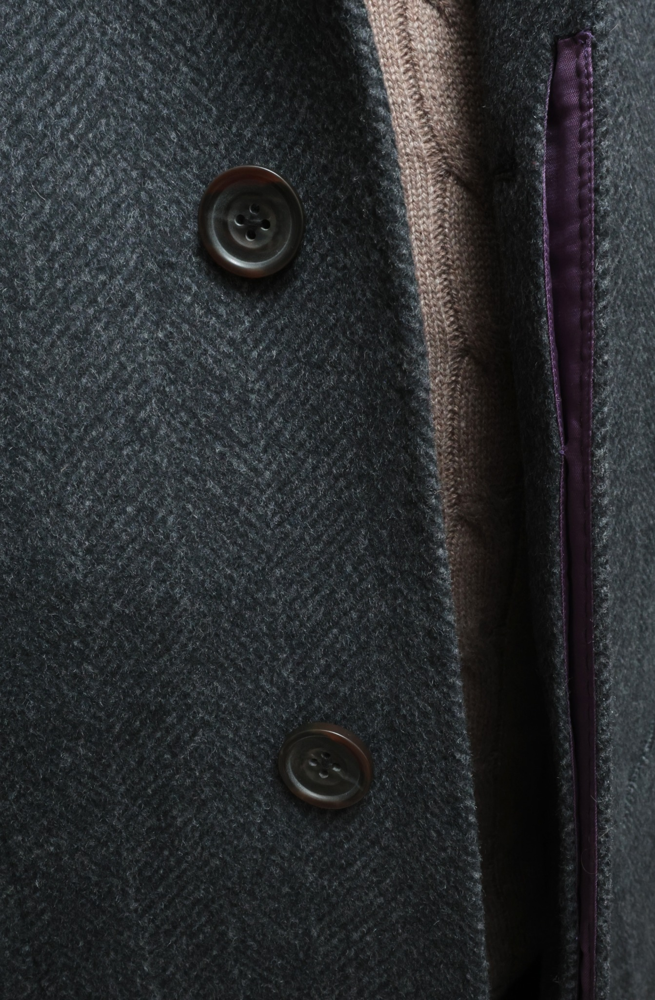

Proportion

Intentional proportions create balance, presence, and clothing that endures.
P.GÓRNE is a New York City atelier offering a wide range of garments, each crafted by a specialist in its respective discipline. We partner with the world's finest cloth mills and artisans to ensure precision and uphold the highest standard of quality. The atelier approaches every garment with an unwavering commitment to proportion, craftsmanship, cloth, and longevity.

Intentional proportions create balance, presence, and clothing that endures.

Each garment is crafted by specialists who bring experience, discipline, and pride to every detail.

The world's finest cloths are selected for their character, performance, and longevity.

Garments are made to be lived in, cared for, and passed down through time.